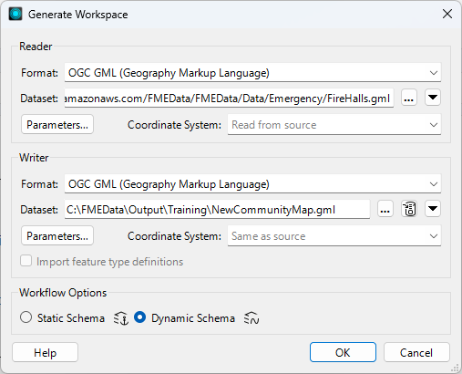
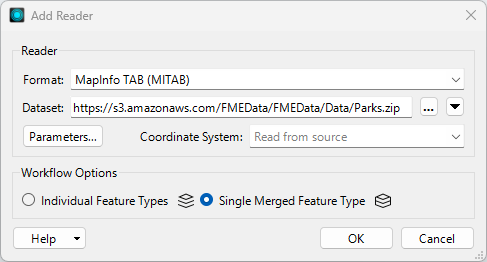
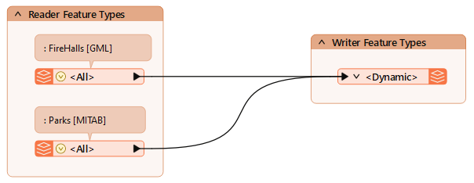
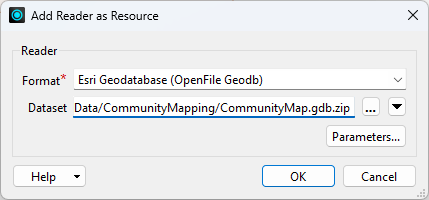
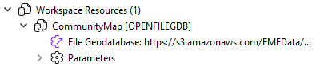
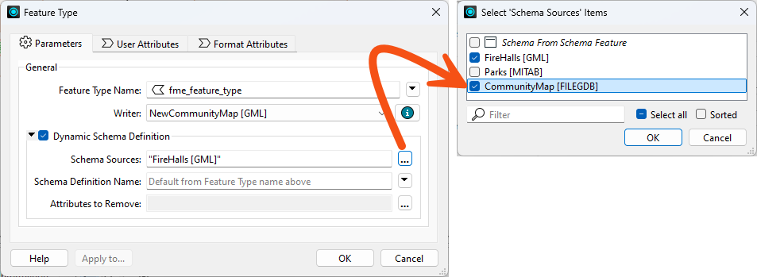
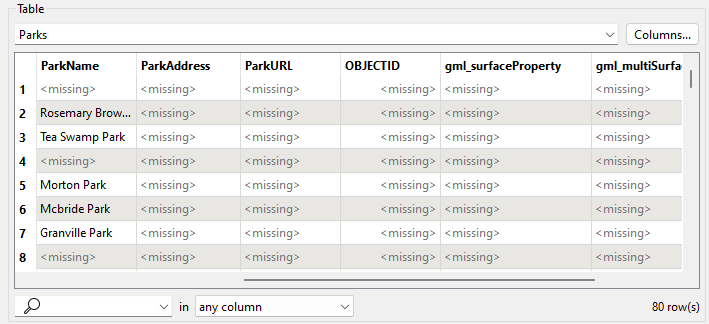
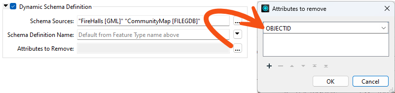
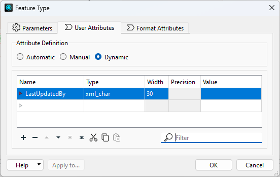

Learning Objectives
After completing this lesson, you'll be able to:
- Create a dynamic workspace with multiple readers.
- Add a Resource Reader.
- Change the source of a dynamic workspace schema.
- Add and remove hard-coded attributes in a dynamic workspace.
In this lesson, you will:
- Optional: Watch a demonstration video (it repeats what we cover in live training).
- Scroll down to read the activity instructions below and, if it has an exercise, follow the steps in your lab.
- Complete the quiz at the end of this lesson.
- Click 'Next' to mark the lesson complete.
Resources
- Complete workspace
- If your computer has FMEData or you are taking a Safe Software training course, the file path is C:\FMEData\Workspaces\AdvancedReadingAndWriting\define-schema-from-an-external-dataset-complete.fmw
- FireHalls.gml
- C:\FMEData\Data\Emergency\FireHalls.gml
- Parks.zip (MITAB)
- C:\FMEData\Data\Parks\Parks.tab
Exercise

Jennifer, a GIS Specialist, is rebuilding the city's community mapping dataset in GML. Two sources feed it: fire halls, which are entirely new, and city parks, which already existed in the old geodatabase as points rather than polygons. She wants the parks to keep the schema they had in that geodatabase rather than inherit the one that comes with the MapInfo data.
In this exercise, you will:
- Use a resource reader to supply a writer schema from a dataset the workspace never reads.
- Adjust a dynamic writer's schema by removing and adding attributes.
1) Generate the Workspace
The fire halls are the new data, so they start the workspace. Choosing Dynamic Schema is what lets the writer take its schema from somewhere other than the dataset being read.
- Start FME Workbench 2026.2 or later.
- Select Build > Generate Workspace and configure the following parameters:
- Reader Format: OGC GML (Geography Markup Language)
- Reader Dataset: the FireHalls.gml download, or C:\FMEData\Data\Emergency\FireHalls.gml
- Writer Format: OGC GML (Geography Markup Language)
- Writer Dataset: C:\FMEData\Output\Training\NewCommunityMap.gml
- Workflow Options: Dynamic Schema

2) Add the Parks Reader
The parks are the second source. Reading them as a single merged feature type keeps that side of the workspace schema-less, which matters because their schema is about to come from somewhere else entirely.
- Select Build > Readers > Add Reader and configure the following parameters:
- Reader Format: MapInfo TAB (MITAB)
- Reader Dataset: the Parks.zip download, or C:\FMEData\Data\Parks\Parks.tab
- Workflow Options: Single Merged Feature Type

- Click OK.
- Connect the new reader feature type to the existing writer feature type.
- Add an annotation to the reader feature types so they are easier to tell apart.

- Turn on Data Caching and click Run.
- Inspect both source datasets inData Preview to see what you are working with.
The fire halls have no history in the old geodatabase, but the parks do, and the brief is to reuse that schema. A resource reader makes a dataset's schema available to the workspace without reading any of its data.
- Select Build > Readers > Add Reader as Resource and configure the following parameters:
- Reader Format: Esri Geodatabase (OpenFile Geodb)
- Reader Dataset: the CommunityMap.gdb.zip download, or C:\FMEData\Data\CommunityMapping\CommunityMap.gdb

- Click OK.
- If you are offered a choice between Individual Feature Types and Single Merged Feature Type, you picked Add Reader rather than Add Reader as Resource. Cancel and choose the other menu entry.
- Observe that the Navigator now lists the geodatabase under Workspace Resources.

4) Point the Writer at the Resource Schema
The writer will use whichever schema sources you tick. Selecting the community map for the parks, while leaving the MapInfo parks unticked, is what swaps one schema for the other.
- Open the properties for the writer feature type.
- Click the Schema Sources browse button, and select CommunityMap and FireHalls while leaving Parks cleared.

- Review the remaining dynamic parameters and click OK.
- The output mixes points and polygons, which some formats would need a Geometry setting for. GML handles both, so the User Attributes tab has no Spatial Definition section at all here.
5) Run the Workspace
This run shows whether the parks really did pick up the geodatabase schema. It also exposes an attribute you didn't ask for.
- Save the workspace, then select Run > Rerun Entire Workspace.
- Inspect the output.
- There are two layers, fire halls and parks. The parks carry the community map schema, including ParkName, ParkAddress and ParkURL, even though there is no matching data to fill them yet.
- They also carry OBJECTID, which came along from the geodatabase and is not wanted.
- Selecting View Written Data opens the Select Dataset to View dialog. Specify the format and dataset to see the data. The Tips at the end of this exercise explain why FME asks.

6) Remove OBJECTID
Attributes inherited from a resource reader can be dropped at the writer. OBJECTID has to be typed in by hand.
- Open the writer feature type properties again.
- Click Attributes to Remove and type
OBJECTID into the first row.
- It is not in the drop-down list because it comes from a resource reader rather than a real one.
- Click OK to close that dialog, leaving the feature type dialog open.

7) Add the LastUpdatedBy Attribute
A late request: every table in the output needs a LastUpdatedBy column. Adding it by hand alongside a dynamic definition shows the two can coexist.
- Click the User Attributes tab and add an attribute named
LastUpdatedBy as a 30-character string.
- The attribute definition mode stays Dynamic. It does not need changing.
- Click OK.

8) Re-Run the Workspace
The final check is that both edits took effect on both layers, not just the one that came from the geodatabase.
- Save the workspace and re-run it.
- Inspect the output.
- OBJECTID is gone. LastUpdatedBy appears on both Parks and FireHalls, with no value yet. A later lesson fills it in.
You have built a workspace whose writer takes its schema from a dataset it never reads, then trimmed and extended that schema at the writer. This is how you keep a new dataset consistent with an existing one without copying its structure into the workspace by hand.
Tips
- A resource reader contributes a schema, not data. That is why its attributes cannot be picked from a drop-down and why nothing from the geodatabase appears in the output rows.
- If the Add Reader dialog offers Individual Feature Types or Single Merged Feature Type, you are adding a real reader. A resource reader never asks that question.
- Selecting View Written Data on a dynamic or generic writer feature type usually opens the Select Dataset to View dialog, because FME does not know the format or path in advance. Specify the format and dataset to view the data. The same happens with a writer feature type fanout, where the output path depends on an attribute value FME only reads at run time.